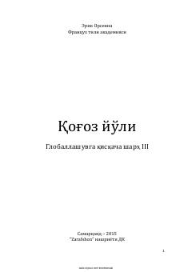

QYQogʻoz ishlab chiqarish va globallashuv jarayonlarining iqtisodiy hamda ekologik tahlili.
Ushbu asar fransuz yozuvchisi Erik Orsennaning globallashuv jarayonlarini qogʻoz ishlab chiqarish va isteʼmol qilish misolida tahlil qiluvchi ilmiy-ommabop asaridir. Kitobda jahon iqtisodiyoti, atrof-muhitni asrash, resurslardan oqilona foydalanish va qayta ishlash madaniyati kabi dolzarb masalalar yoritilgan.